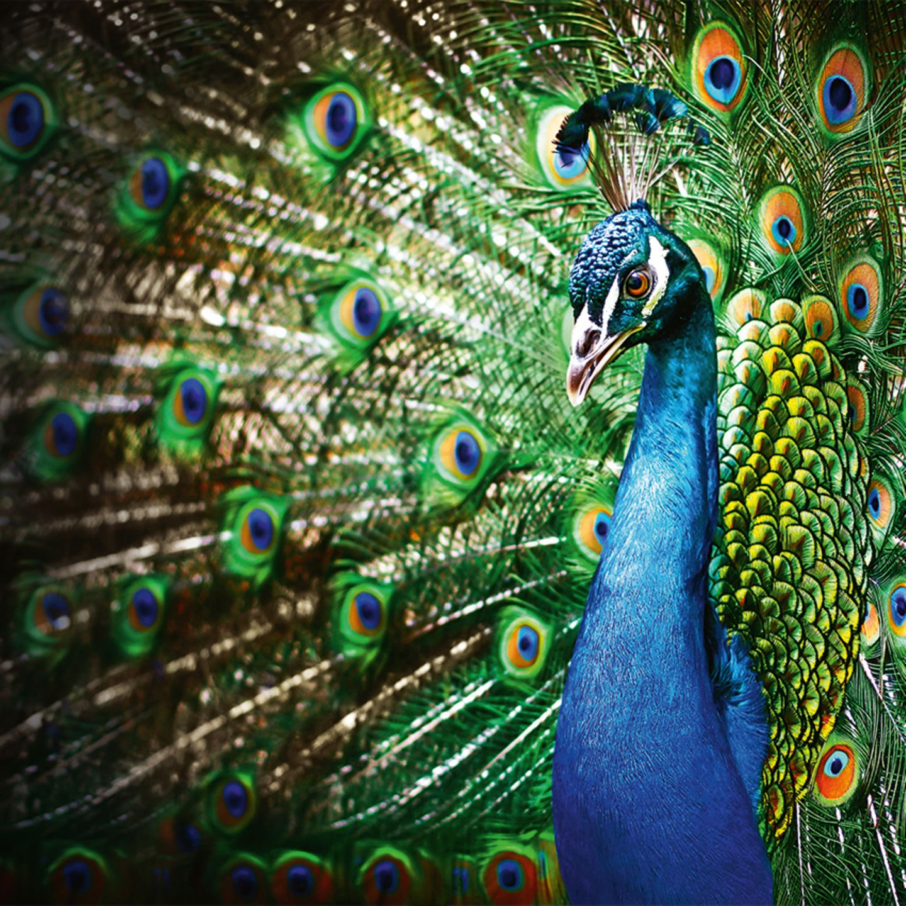

Südasien
Der Blaue Pfau stammt ursprünglich aus Indien und Sri Lanka. Heute lebt er auch in vielen anderen Regionen der Welt.
Du hast das geheime Pfauen-Universum entdeckt!
EIN WUNDER DER NATUR
Majestätisch. Farbenprächtig. Geheimnisvoll. Tauche ein in die faszinierende Welt der Pfaue und entdecke, was hinter ihrem prächtigen Gefieder steckt.
Die Welt der Pfaue entdecken ↓Die wichtigsten Fakten auf einen Blick.
Der Blaue Pfau stammt ursprünglich aus Indien und Sri Lanka. Heute lebt er auch in vielen anderen Regionen der Welt.
So heisst der Blaue Pfau in der Wissenschaft.
Pfaue gehören zur Familie der Fasanenartigen.
Sie fressen Samen, Früchte, Pflanzen, Insekten und manchmal kleine Tiere.
Das auffällige Rad des Männchens besteht aus langen oberen Schwanzdeckfedern. Der eigentliche Schwanz darunter ist deutlich kürzer.
Erfinde deine eigene, einzigartige Pfauenfeder!
Deine eigene Pfauenfeder 🪶
Warum schillern Pfauenfedern eigentlich so wunderschön?
Die schillernden Farben entstehen nicht einfach durch blaue oder grüne Farbstoffe. Winzige Strukturen in den Federn reflektieren und brechen das Licht auf besondere Weise. Deshalb können die Farben je nach Blickwinkel unterschiedlich wirken.
Die runden Muster auf den Federn erinnern an kleine Augen.
Das Männchen spreizt seine langen Schmuckfedern zu einem grossen Fächer.
Mit seinem Rad versucht das Männchen, Weibchen zu beeindrucken.
Die beiden sehen ziemlich unterschiedlich aus.
Das Männchen hat einen leuchtend blauen Hals, eine kleine Federkrone und lange Schmuckfedern mit auffälligen Augenmustern.
Das Weibchen ist meist unauffälliger gefärbt. Ihr braun-grünes Gefieder hilft ihr dabei, beim Brüten weniger aufzufallen.
Was machen Pfaue eigentlich den ganzen Tag?
Sie leben in Wäldern, an Waldrändern und in offenen Landschaften mit Bäumen und Büschen.
Zum Schlafen fliegen Pfaue häufig auf Äste von Bäumen, wo sie vor vielen Gefahren sicherer sind.
Die Pfauenhenne legt mehrere Eier und brütet sie aus. Die Küken können bald nach dem Schlüpfen laufen.
Pfaue können sehr laute, weithin hörbare Rufe ausstossen.
Teste dein Wissen und werde zum Pfauen-Profi!
THE BEAUTY OF NATURE
